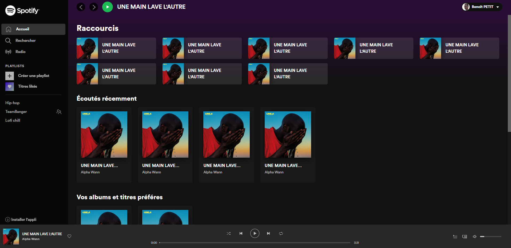
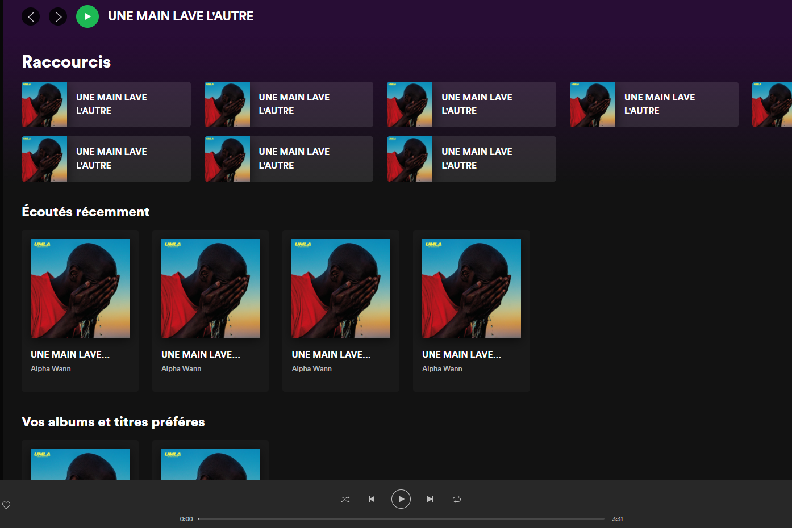

Made using HTML & SCSS, this little project allowed me to train myself for frontend applications with interresting layouts such as Spotify.

This layout includes the use of grid to place blocks such as navigation, playbar, and user flow of albums and playlists.Grid feature is used to design responsive design without even touching to media queries.
This training project also was a great way to explore the navigator audio API using a
lot of events to catch audio attributes.
As well as audio manipulation, I used mouse events to link the audio playbar and music
volume to the width of the element.